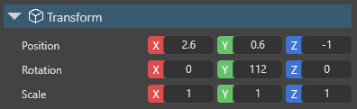

モデルノードリンク
初級 アーティスト
Note
Stride の一部のバージョンでは、モデルノードリンクをボーンリンクと呼ぶこともあります。
モデルノードリンクコンポーネントは、あるエンティティを別のエンティティ上のスケルトンのノードにアタッチします。
例えば、騎士と剣という2つのモデルがあるとします。騎士は、剣を振るアニメーションを持っています。モデルリンクノードを使って剣を騎士にリンクし、騎士のスケルトンの手のノードにアタッチすることで、騎士のアニメーションにあわせて剣を振ることができるようになります。
モデルノードリンクのセットアップ
シーンエディターで、別のエンティティにリンクしたいエンティティ（先述の例で言えば剣）を選択します。
プロパティグリッドで、[Add component] をクリックし、[Model Node Link] を選択します。

Game Studio は、モデルノードリンクコンポーネントをこのエンティティに追加します。

このコンポーネントには、Node Name と Target という2つのプロパティがあります。
Target の横にある
 をクリックします。
をクリックします。すると、Select an entity ウィンドウが開きます。

エンティティをリンクしたいモデル（先述の例で言えば剣士）を選択して、[OK] をクリックします。
Note
このエンティティは、実行時には表示されない場合でも、スケルトンを持つモデルを持っている必要があります。
Tip
モデルを指定しない場合、Stride はエンティティをその親のエンティティのモデルにリンクします。
Node Name で、このエンティティをアタッチしたいモデルの中のノード（先述の例で言えば、剣士モデルの中の手ノード）を選択します。

ノードにリンクした後は、Entity Tree で、エンティティ名の横に青い色でリンクが表示されます。

オフセット
リンクしたエンティティにオフセットを追加するには、エンティティの TransformComponent を使います。

Note
オフセットを追加したくない場合は、値がすべて 0,0,0 に設定されていることを確認してください。
関連項目
- アニメーションのインポート
- アニメーション プロパティ
- アニメーションのセットアップ
- アニメーションのプレビュー
- アニメーション スクリプト
- 加算アニメーション
- プロシージャル アニメーション
- カスタム ブレンド ツリー
- カスタム属性
モデルノードリンクの使用例については、以下を参照してください。